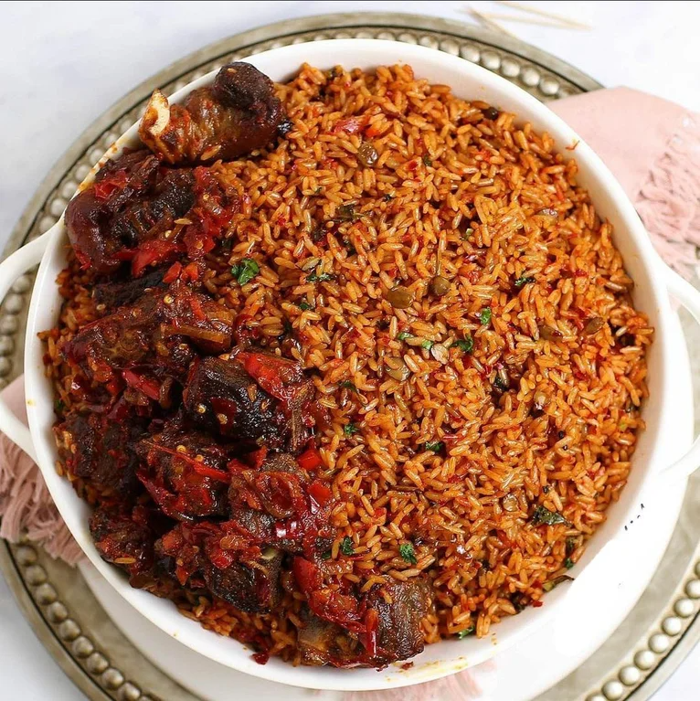

Jollof Rice
Nigerian Jollof Rice or Jellof rice is a rich and incredibly tasty west African one-pot Meal.
It is a very versatile dish, and it is usually made from scratch using Rice, Tomatoes,
Pimento peppers, Tomato paste, Scotch bonnet, Onions, Salt, and other spices.

Ingredients
- Groundnut oil
- Onions
- Garlic
- Ginger
- Tomato paste
- blended peppers
- Thyme
- curry poweder
- Seasoning cubes
- bale leaves
- paprika powder
- Rice
How To Cook Jollof Rice
When cooking Jellof rice, building a flavor base is very important. Don’t be in haste to dump your ingredients in the pot otherwise, you will end up with what we call ”concoction”. Each step counts so try to do each of the steps in detail.
- The inevitable foundation for building up the flavor in this meal is to start by frying Onions in hot oil. This should take about 3 to 5 minutes. The next thing is to stir in the Tomato paste. This adds a deep and rich tomato flavor; I simply fry this for another 5 minutes or thereabouts.
- Add the Ginger and Garlic and cook along with the Tomato paste for another two minutes; Actually, by the time this ready, you will notice it in the smell. If you keep it cooking any longer you might risk burning them.
- Add my blended peppers. Usually, there is no particular time frame for frying this pepper. I often stop when the sauce becomes really thick and the oil literally floats on top of the sauce. At this point, most of the water is gone and the sauce no longer smells raw. Trust me you will know but just in case, you are still in doubt, I would say maybe 20 to 25 minutes depending on the quantity of water in your blended pepper.
- Finally, in building my flavor, I add the Thyme, Curry powder, Salt, white pepper (good but optional) and seasoning cubes. Adjust the seasoning at this point if there is a need to. Once the flavor is on point, then, I stir in my Rice. Make sure you stir the Rice properly until you cover each grain of Rice with the sauce. Now add the chicken stock. Give it a brief stir and cover it up with a tight-fitting lid. If your lid is not fitting enough, simply cover the rice with a foil paper before covering it with the lid. This is because Jollof needs a lot of steam in order to turn out well.
- Once, the rice comes to a boil, reduce the heat to medium-low immediately and continue to cook until the rice is done about 20 to 25 minutes.
- Serve with Fried Chicken, Spicy Grilled Chicken, or Gizzards and Plantains.